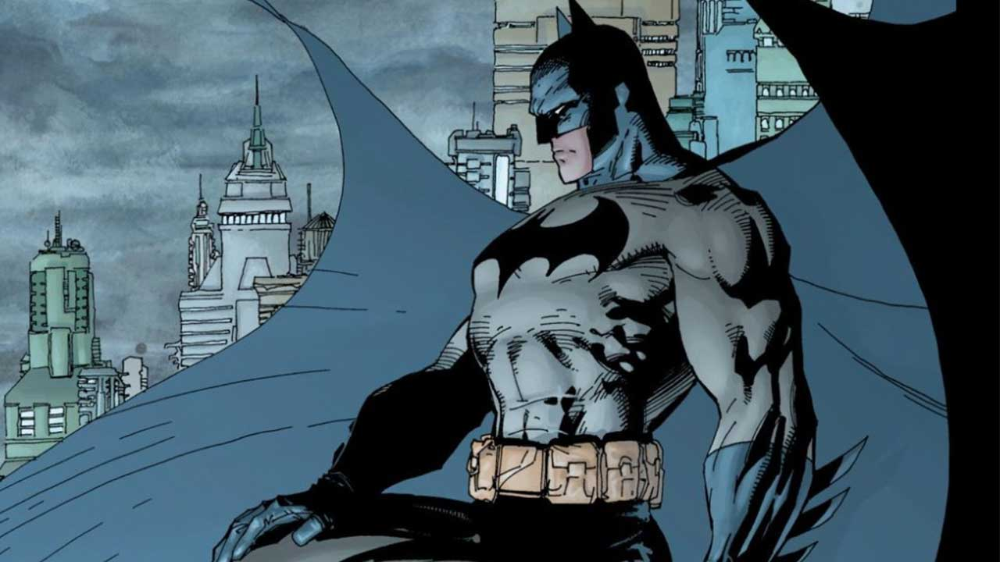

The beginning
Batman is a fictional superhero appearing in American comic books published by DC Comics. The character was created by artist Bob Kane and writer Bill Finger, and first appeared in Detective Comics #27 in 1939. Originally named the "Bat-Man," the character is also referred to by such epithets as the Caped Crusader, the Dark Knight, and the World's Greatest Detective. The character became popular soon after his introduction in 1939 and gained his own comic book title, Batman, the following year. As the decades went on, different interpretations of the character emerged. The late 1960s Batman television series used a camp aesthetic, which continued to be associated with the character for years after the show ended. Various creators worked to return the character to his dark roots, culminating in 1986 with The Dark Knight Returns by Frank Miller. The success of Warner Bros. Pictures' live-action Batman feature films have helped maintain the character's prominence in mainstream culture.
Origin
The central fixed event in the Batman stories is the character's origin story. As a young boy, Bruce Wayne was horrified and traumatized when he watched his parents, the physician Dr. Thomas Wayne and his wife Martha, murdered with a gun by a mugger named Joe Chill. Batman refuses to utilize any sort of gun on the principle that a gun was used to murder his parents. This event drove him to train his body to its peak condition and fight crime in Gotham City as Batman. Pearson and Uricchio also noted beyond the origin story and such events as the introduction of Robin, "Until recently, the fixed and accruing and hence, canonized, events have been few in number", a situation altered by an increased effort by later Batman editors such as Dennis O'Neil to ensure consistency and continuity between stories. In Batman's first appearance in Detective Comics #27, he is already operating as a crime-fighter. Batman's origin is first presented in Detective Comics #33 (Nov. 1939) and is later expanded upon in Batman #47. As these comics state, Bruce Wayne is born to Dr. Thomas Wayne and his wife Martha, two very wealthy and charitable Gotham City socialites. Bruce is brought up in Wayne Manor, and leads a happy and privileged existence until the age of eight, when his parents are killed by a small-time criminal named Joe Chill while on their way home from a movie theater. That night, Bruce Wayne swears an oath to spend his life fighting crime. He engages in intense intellectual and physical training; however, he realizes that these skills alone would not be enough. "Criminals are a superstitious cowardly lot", Wayne remarks, "so my disguise must be able to strike terror into their hearts. I must be a creature of the night, black, terrible ..." As if responding to his desires, a bat suddenly flies through the window, inspiring Bruce to craft the Batman persona. In early strips, Batman's career as a vigilante earns him the ire of the police. During this period, Bruce Wayne has a fiancée named Julie Madison. In Detective Comics #38, Wayne takes in an orphaned circus acrobat, Dick Grayson, who becomes his vigilante partner, Robin. Batman also becomes a founding member of the Justice Society of America, although he, like Superman, is an honorary member, and thus only participates occasionally. Batman's relationship with the law thaws quickly, and he is made an honorary member of Gotham City's police department. During this time, Alfred Pennyworth arrives at Wayne Manor, and after deducing the Dynamic Duo's secret identities, joins their service as their butler.